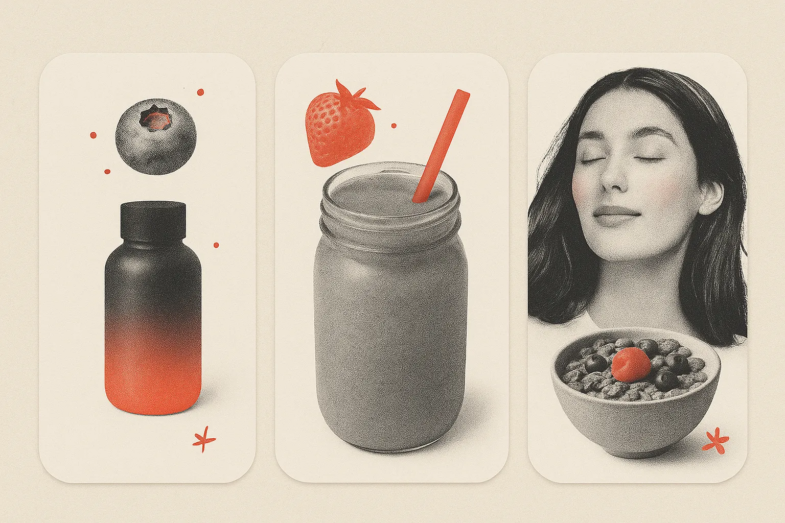
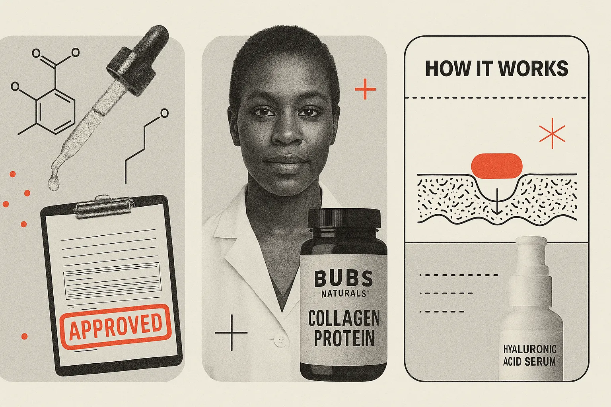

Every month, the inbox behaves like a middle school cafeteria. Groups form. Aesthetics collide. Someone shows up wearing something bold and everyone secretly copies it a week later. November was no exception — except this time, instead of low-rise jeans and butterfly clips, we got an invasion of berries, sciencesplaining, and welcome overhauls.
If there was ever a month that summed up the emotional rollercoaster of holiday marketing (e.g., hopeful, cozy, slightly desperate), this was it. Four trends stood out in a big way, and they tell us a lot about where email design is drifting as we slide into the end of the year.
Let’s get into the top-saved emails from November 2025 trends.
https://reallygoodemails.com/u/TeamRGE/collections/ijfYMYeItgRpwOwx8Q0j/
Trend 1: Berry-Core Is Everywhere and the Inbox Is Starting to Smell Like a Smoothie Bar
November declared berries the official emotional support flavor of 2025. Blueberries, raspberries, berry gradients, berry packaging, berry vibes. But the berry onslaught isn’t about fruit. It’s a shortcut brands are using to signal: I am healthy, I am soft, I am delicious, but also please buy my cereal.

Berries give brands permission to sit in that sweet spot between indulgence and “my doctor would approve,” which is exactly where stressed-out holiday shoppers want to be. In other words, berries are adopting a health halo for the products that they are associated with.
Ecommerce brands know this trick well. They ride the affect heuristic: if something looks healthy and delicious, consumers assume the whole product is good for them. That’s why you see it clearly with Buoy, Alice, Blendtec, and Olipop (the last one also featured below in another trend).
B2B has a harder time with berry imagery, but it can still be done. Imagine Salesforce sending a blueberry-themed email about CRM workflows. That may feel weird. But Asana leans into their berry smoothie palette, not as an accent but as a full-color-to-the-edge experience. It’s a reminder that B2B brands can go with brighter palettes, softer tones, and visuals that look alive and not antiseptic.
Which takes us to why the berry-core color palette works so well right now. Berry tones sit in a very unusual spot on the color spectrum. They are emotionally warm and perceptually cool at the same time. That contradiction is powerful because it creates a kind of approachable sophistication that's extremely hard to replicate with primary colors or neutrals.
Strong reds (kind of like what we use for Really Good Emails or a Coca-Cola can) communicate alertness and reasons to stop. Muted reds and pinks, on the other hand, lower cognitive resistance (like those used in the Baker-Miller Pink study). They communicate approachability, interest, and calm the nerves. And when the inbox gets loud with “Buy Now,” and “One-Day Only” discounts leading up to Black Friday, these berry-mood emails tend to feel more safe.
In summary:
- Palette: Pink-raspberry reds, blueberry purples, berry-stained typographic blocks.
- Mood: “You could heal your entire life if you just ate more antioxidants.”
- Impact: Surprisingly delightful.
Trend 2: The Authority Power Move
If you’ve felt like a lot of brands suddenly put on a white lab coat and started talking to you like a TV expert… well, you’re not wrong.
The Authority Angle is fully here. We’ve clocked this growing trend for months, but it seems it has gone mainstream. Hims, MasterClass, Buoy (a different one than before), SOM… suddenly everyone’s email reads like the an excerpt from a college textbook. There are diagrams. Ingredient callouts. Comparison charts. Magnified cross-sections of skin. The whole we’ve-done-the-research-so-you-don’t-have-to routine.
In shaky economic periods, consumers cling to anything that feels proven, credentialed, or lab-verified. This is the competence cue in consumer psychology. In research by Dubois, Rucker & Galinsky (2016), people who feel high power (confident and in control, like they know what they’re doing and are up to date on things) are most persuaded by these competence-heavy messages. And in times of uncertainty (economic, political, existential), even low-power consumers crave the security of expertise. When the world feels chaotic, a diagram of a collagen peptide suddenly feels like a warm blanket. Okay, maybe not, but you get the idea.

But here’s the twist: If your reader is new to your category, feels overwhelmed, insecure, or confused, too much scientific flexing can actually backfire. The research shows that low-power audiences are more persuaded by warmth cues (friendliness, reassurance, “we’ve got you” energy).
So, if we stay with the warm blanket scenario, let’s imagine you sell a weighted blanket. People buy it because it is comfortable, helps them sleep better, relieves anxiety, feels safe, and is pretty much the equivalent of a hug. But let’s say your marketing team gets excited about this trend on RGE and decides to “science-up” the welcome email series. Suddenly your cozy, friendly brand launches an email filled with cross-sections of fabric fibers, charts showing “pressure distribution ratios”, diagrams of “micro-bead density,” and bar graphs of dopamine levels of before and afters.
The inbox vibe goes from a soft hug from a friend to a clinical study on sleep compression. So instead of comforting the customer, your hyper-authoritative email creates a power mismatch. The consumer subconsciously thinks:
- “This feels too complicated.”
- “Am I buying a medical device?”
- “I just wanted something soft.”
- “Why does this blanket look like an MRI report?”
What should have been a slam dunk purchase becomes friction.
If you had simply shown the blanket, a calm bedroom scene, and language like “Sleep deeper. Feel calmer. Wake restored,” it could’ve easily gotten you that click-to-open rate (CTOR) that is bragged about.
In other words, use this trend with some caution.
Trend 3: Cozy Fall Maximalism
After years of “seasonal minimalism” where fall emails suggested through one sad leaf and a color that might be called “cider haze,” brands are finally maxing out the cozy.
We’re talking sweaters, wheat stalks, blankets (none weighted that we could tell), and warm drinks. Think Maeve’s bright fall colors, Smalls’ fall motifs, Lush’s pumpkin-pie-in-the-shower feel, and Athletic Brewing’s harvest aesthetic.
It’s a bit different than what November’s most-saved emails looked like a few years ago. In 2022, we were saving soft candles, curating wine, and planning for the holidays. Almost as if November was only necessary to get us to December.
Even though it isn’t a surprise that we are in a fall mood in the northern hemisphere, it’s even better seeing it embraced in a more colorful approach. There’s something charming about a brand going full Hallmark but in a tasteful, editorial, fun-forward way.
Trend 4: Welcome Emails Are Getting Overhauled
November is when most marketers are deep in the Black-Friday-trenches: subject lines about sales, segmentation panic, deliverability doom spirals, existential dread — the whole holiday package. Everyone is heads-down on campaigns.
Which is exactly why November is the perfect month to overhaul your email welcome series.
IMBŌDHI, Typeform, Zapier, Affinity — all of them shipped welcome experiences that felt intentional, editorial, and surprisingly robust. We’re talking feature modules, onboarding steps, brand narrative, lifestyle images… the works. Welcome emails used to be the digital handshake: short, polite, forgettable. But this year? They’ve evolved into mini landing pages — and honestly, some are better than the brand’s actual landing page.
Why this matters:
- You’re about to get more net-new subscribers than any other month. And the welcome series is the only email guaranteed to reach them while they’re still warm.
- New subscribers join in a “motivated moment.” They’re curious. They’re open. They’re unusually receptive to messaging. If your welcome series is dusty, generic, or two GIFs and a coupon code from 2017, you’re wasting the highest-converting touchpoint in your entire lifecycle.
- A good welcome series cushions unsubscribes. People sign up, forget, re-engage, drop off, and resurface in waves; a strong welcome sequence anchors them before the chaos hits their inbox.
- It sets expectations before Black Friday noise overwhelms them. If they understand who you are, what you do, and why you exist, they’re less likely to ghost you when 400 other brands pile into their inbox on November 28th.
- The most important: The welcome series works forever — your Black Friday campaign works once. Fixing a welcome series is the highest-ROI lifecycle investment you can make during Q4.
On the other hand, no one signs up for a SaaS platform’s newsletter because they’re hoping for 40% off a workflow automation tool. Holiday traffic for B2B is flatter, calmer, and sometimes slower. Welcome series improvements still matter (especially for PLG brands) but the timing rationale is different because B2B prospects aren’t rushing and signup spikes happen around fiscal periods, industry events, or product launches… not Black Friday.
In other words: Timing matters more than content.
Right after signup, people experience the “motivated moment”: a spike in openness and willingness to explore. It’s the single highest psychological readiness point for conversion and adoption. If you are overhauling your welcome emails, remember that it should focus on:
- orientation
- benefit framing
- usage suggestions
- modular content blocks
- onboarding shortcuts
Trends Are Signals, Not Instructions
If November taught us anything, it’s that inbox trends aren’t just decorative choices. They’re reflections of strategy. But here’s the part most marketers miss: Not every trend is for you and not every trend is for your audience.
If your product is emotional, indulgent, or comfort-driven? Maybe skip the molecule diagrams before you terrify people out of buying a cookie.
If your audience feels unsure, stressed, or low-power? Warmth beats competence nine times out of ten.
If your brand plays in the realm of expertise and stakes are high? Authority earns trust faster than a cute mascot ever will.
If your customers are about to flood your signup form this month? Refresh that welcome flow before your holiday traffic hits.
November’s most-saved emails showed us that design is persuasion, emotion is strategy, and trends are simply tools.
Use them on purpose. Use them to serve your audience. Use them knowing exactly why they work. (And just as importantly, why they sometimes don’t.) Because the moment you stop copying trends and start choosing them, your emails stop blending in and start performing with the clarity and confidence your subscribers actually want.